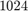
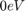
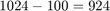
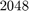
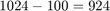
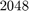
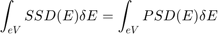
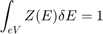

Contents
function psd = plural_scattering(back_sub_core_loss_spectrum, low_loss_spectrum)
The routine provids the plural scattering distribution by convolving the low-loss spectrum and single scattering ionization edge. The prior conditions for this is that the dispersion of low-loss and core-loss must be same. The inonization edge must be background subtracted.
%%%%%%%%%%%%%%%%%%%%%%%%%%%%%%%%%%%%%%%%%%%%%%%%%%%%%%%%%%%%%%%%%%%%%%%%%%% % Input : % back_sub_core_loss_spectrum - The background subtracted core-loss edge. % low_loss_spectrum - low-loss spectrum with zero-loss and % plasmon peaks. The intergral of the % low-loss must be unity. Zero-loss peak must % be calibrated to $0eV$ % Output: % psd - Plural scattering distribution. % %%%%%%%%%%%%%%%%%%%%%%%%%%%%%%%%%%%%%%%%%%%%%%%%%%%%%%%%%%%%%%%%%%%%%%%%%%%
Zero-pad and center the zero-loss peak
In matlab the center index is considered as while convoluting. Hence move the zero-loss peak so that zero-loss peak is at exactly in the midle of the spectrum. This can be done by zero-padding before zero-loss and zero-pad after the end of the spectrum to make the length double. If originally zero-loss spectrum has  data points and  is at the channel  . Then zero-pad  data points before the zero-loss spectrum and zero-pad data points after the zero-loss spectrum. Hence after zero-padding the length of the centered spectrum will be  data points.
. Then zero-pad  data points before the zero-loss spectrum and zero-pad data points after the zero-loss spectrum. Hence after zero-padding the length of the centered spectrum will be  data points.
Prepare the data to make it a column vector
if iscolumn(back_sub_core_loss_spectrum) % Assign column vector to a local variable _E_ E = back_sub_core_loss_spectrum; else % Transpose matrix to make it column vector E = back_sub_core_loss_spectrum'; end if iscolumn(low_loss_spectrum) % Assign column vector to a local variable _Z_ Z = low_loss_spectrum; else % Transpose matrix to make it column vector Z = low_loss_spectrum'; end % Get the channel at 0eV ind_Z = find(Z==max(Z)); % Zero-pad before and after the low-loss spectrum nZ = [zeros(length(Z)-ind_Z,1); Z; zeros(ind_Z,1)];
Not enough input arguments. Error in plural_scattering (line 31) if iscolumn(back_sub_core_loss_spectrum)
Convolution with low-loss spectrum
In plural scattering the the intensity is redistributed along the energy-loss axis. But the total integral remains same. Hence the convolving term i.e low-loss whose integral must be unity.


After convolution, only the data points at the center are considered so that the core-loss and the convolved spectrum (PSD) have same length.
psd = conv(E,nZ/sum(nZ),'same');
The length of PSD(E) is same as the original SSD(E).